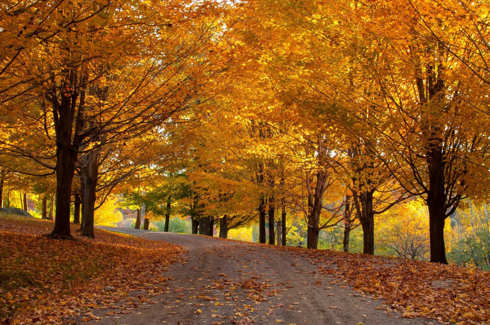

Fall Page
Fall is the season for all senses. The feel of cooler temperatures after a long summer. A warm, visually pleasing palate of reds, oranges and browns. The taste of pumpkin spice in everything. The sound of crunching leaves underfoot. The smell of woodsmoke. The many elements of autumn either intrinsically deliver happiness or trigger memories of past joy from which we can keep taking bites, as from a freshly baked apple pie. While we celebrate the seasonal joys, we should remind ourselves that they are blazes on a trail that goes deep into a beautiful forest of wisdom and meaning. Like spring, fall is a season of transition, a reminder of the value of change, in this case from bright, buzzing, verdant summer toward the dark, quiet calm of winter. It's a journey inward; first experiential, then intellectual and finally into the collective unconscious.
Nulla lobortis massa est, et pretium magna faucibus non. Quisque pretium mauris eu ultrices feugiat. Pellentesque lorem felis, vulputate sit amet maximus et, volutpat ut metus. Integer et venenatis leo. Morbi eget dui enim. Sed eu mi rhoncus, luctus dui sit amet, varius ipsum. Nullam congue at mauris eget aliquam.